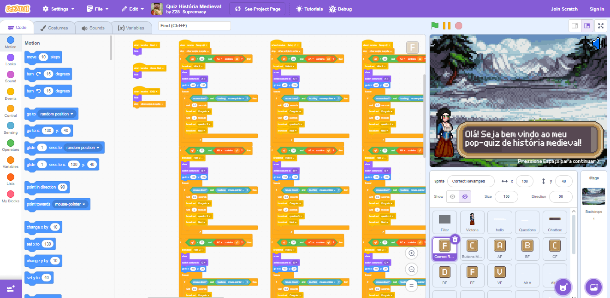

Quiz Medieval Interativo
Este projeto é um jogo educativo desenvolvido na plataforma Scratch, com foco na História Medieval. Criado com fins pedagógicos, o jogo visa complementar a grade curricular do 7º ano do Ensino Fundamental, utilizando elementos de gamificação para tornar o aprendizado mais envolvente e acessível aos estudantes.
O jogo foi programado inteiramente no Scratch e utiliza uma estética baseada em pixel art. Sua mecânica consiste em um quiz com 40 perguntas, das quais 10 são selecionadas aleatoriamente em cada seção, garantindo variedade e rejogabilidade. As perguntas são de nível fácil, ideais para reforçar o conteúdo visto em aula.
Os jogadores têm até uma hora para concluir o desafio, proporcionando tempo suficiente para reflexão e tomada de decisões. O código foi elaborado de forma robusta, sendo extremamente difícil de bugar, mesmo com múltiplas tentativas.
Como curiosidade adicional, o jogo conta com um easter egg escondido na descrição do projeto no Scratch, incentivando a curiosidade e exploração dos alunos.
Este trabalho obteve nota máxima em sua avaliação, destacando-se tanto pela proposta didática quanto pela execução técnica. Atualmente, está em processo de avaliação para possível implementação oficial na grade da disciplina de História.